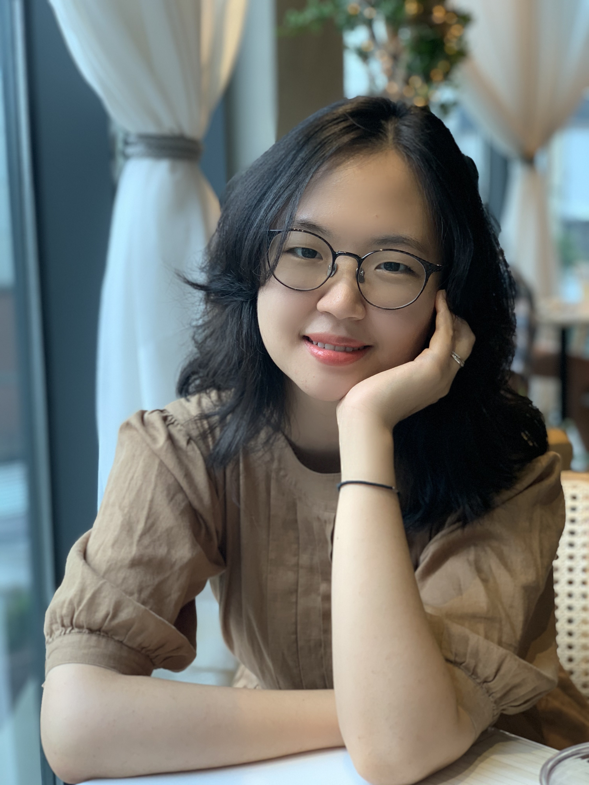

Hello! I’m an Assistant Professor of Asian Studies and Global Affairs at the Keough School of Global Affairs, University of Notre Dame. My research focuses on various forms of
political communication through online channels, with a
particular interest in misinformation and its correction within online communities. My
dissertation project studies how leveraging online group
identities can result in effective correction of misinformation among online community users. I also study political communication more broadly with a particular interest on elite communcation behaviors and public opinion on social media. Methodologically, I adopt a multi-method approach, including computational methods (text-as-data), survey experiments, design-based causal inference, and qualitative fieldwork.
My research has been supported by the APSA Doctoral Dissertation Research Improvement Grant and has been published at American Journal of Political Science, International Organization, Political Science Research and Methods, Journal of Theoretical Politics, and Humanities and Social Sciences Communications.
In 2025, I earned my Ph.D. in Political Science at Washington University in St. Louis. Prior to the Ph.D. program, I earned an M.A. and a Bachelor's degree in Political Science from Seoul National University.